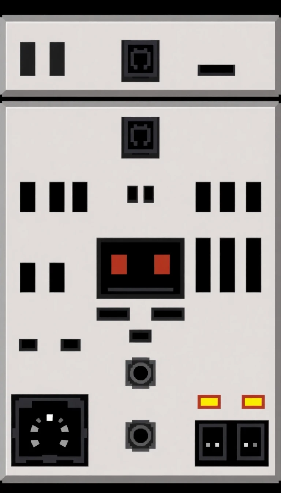
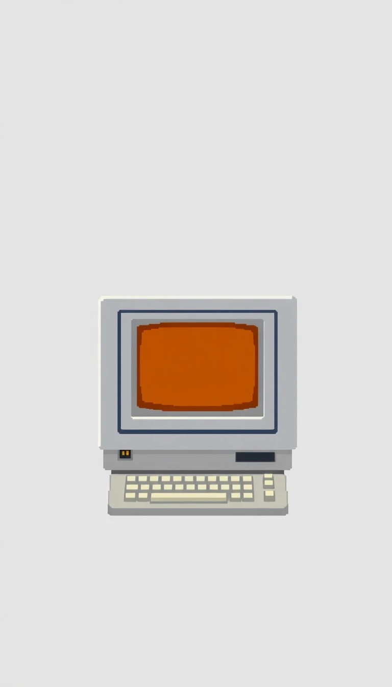

Internetdienste und Modems
DougNet bietet die Infrastruktur für schnelle, zuverlässige und sichere Datenkommunikation. Von zentralen Vermittlungsstellen bis zu Heimanschlüssen – Dougtone verbindet die Welt.
DougNet C-12 CoreSwitch (1976)
Zentrale Vermittlungseinheit für Unternehmens- und Regierungsnetzwerke.
- Release Jahr: 1976
- Spezifikationen: 12 Hochgeschwindigkeits-DougLink™-Trunk-Ports, Optische DougPulse™-Synchronisation, Redundante Relais-basierte Steuerebene
- Einsatzbereich: Verbindet DKA-Knoten, DougTV-Sendezentren und Dougtron-Labore
- Gehäuse: Aluminiumguss mit Belüftungsrippen und Kippschaltern
DougNet X-Frame NodeRouter (1978)
Edge-Computing-Knoten mit integriertem Routing und Berechnung.
- Release Jahr: 1978
- Merkmale: Steckbare Routing-Module (DougRoute 80/160), Onboard DougWord-16 Prozessor, Dual-Protokoll-Stack: DougTCP / DougFrame Relay
- Einsatzbereich: Universitätscampusse, Rechenzentren, frühe DougKioske
DougNet Terminal- und Zugangssysteme
DougNet T-300 Terminaleinheit (1977)
Grundlegendes Terminal mit DougNet-Schnittstelle und DougChat-Kompatibilität.
- Release Jahr: 1977
- Spezifikationen: 5" amberfarbener CRT, DougASCII-Tastaturbelegung, DougLink™ Typ-A-Port
- Merkmale: Verbindet sich über Koaxial- oder DougFiber™-Kabel mit Hostsystemen oder DougNet-Hauptleitungen
DougNet M-1 Modembank (1976)
Multi-Line-Schnittstelle zur Verbindung von Telefonleitungen mit DougNet-Knoten.
- Release Jahr: 1976
- Spezifikationen: 300 / 1200 Baud Modem-Pool, Integrierte DougTonePad-Authentifizierung, Statusleuchten in Wabenmuster
- Einsatzbereich: Öffentliche Bibliotheken, Konsumprodukt-Geschäfte, DougCab-Kontrollzentren
DougNet Sicherheit und Überwachung
DougNet VIGIL (1980)
Überwachungs- und Verhaltensanalyseplattform, verbunden mit DougNet-Knoten.
- Release Jahr: 1980
- Funktionen: Anomalieerkennung in DougMail™- und DougChat™-Protokollen, Graph-basierte individuelle Beziehungszuordnung, DougSpeech-to-Text-Analyse von Telefonie-Audioströmen
- Betrieben von: DKA, DougTV Security und vertrauenswürdige Regnad-Partner
- Zugriffslevel: Freigabe D oder höher
DougNet Guardian Terminal (G-T1) (1981)
Gehärtetes Terminal zur Ausgabe von DougBlocks, Fernsteuerungen und memetischen Gegenmaßnahmen.
- Release Jahr: 1981
- Design: Stahlummanteltes Gehäuse mit biometrischem Daumenpad und Not-Aus-Hebel
- Funktion: Man-in-the-loop Entscheidungssysteme, AI-unterstützte Sperrungen, Schalter zur Dämpfung psychischer Felder
DougNet Speicher und Archive
DougNet D-ARK Vault Server (1982)
Massenarchivierungsspeicher für Unternehmens-, Staats- und metaphysische Aufzeichnungen.
- Release Jahr: 1982
- Kapazität: DougRAID-6 redundanter Speicher (96MB pro Rack), Optisches DougTape-Backup-System, Kompatibilität mit DougWord Indexing Engine
- Anwendungsfall: Historische Archivierung, DougTV-Episoden-Backups, Datensätze für Verhaltenstraining
DougNet Interaktiv
DougNet TelePad™ (1983)
Berührungsempfindliche Konsumentenschnittstelle für den Zugriff auf DougNet von zu Hause.
- Release Jahr: 1983
- Funktionalität: Live-Nachrichten, DougGames, Finanzstatistiken, Essensration-Anfragen
- Schnittstelle: DougNet LiteLink™ über Koaxialkabel
- Design: Imitat-Holzvertäfelung mit hinterleuchtetem DougLogo™
DougChat™ Node Paket
Software- und Protokollpaket für Echtzeit-Textkommunikation.
- Enthält: DougChat/Term (Terminal-basierter Chat), DougRoom (Gruppen-Chaträume), DougPresence (Online-Status mit Vertrauenslevels)
- Kompatibel mit: DougNet X-Frame, T-300, DougGames KodeKart
Software-Protokoll-Stack (DougNet OSI-ähnliches Modell):
- Schicht 1 – DougPulse™ / DougToneCarrier
- Schicht 2 – DougFrame Relay
- Schicht 3 – DougRoute 80
- Schicht 4 – DougTCP (Das konforme Protokoll)
- Schicht 5 – DougTrust (Identität + Loyalitäts-Token)
- Schicht 6 – DougSense (Schnittstellen-Rendering und Tonanalyse)
- Schicht 7 – DougWill (Abstraktionsschicht für Benutzerabsichten)